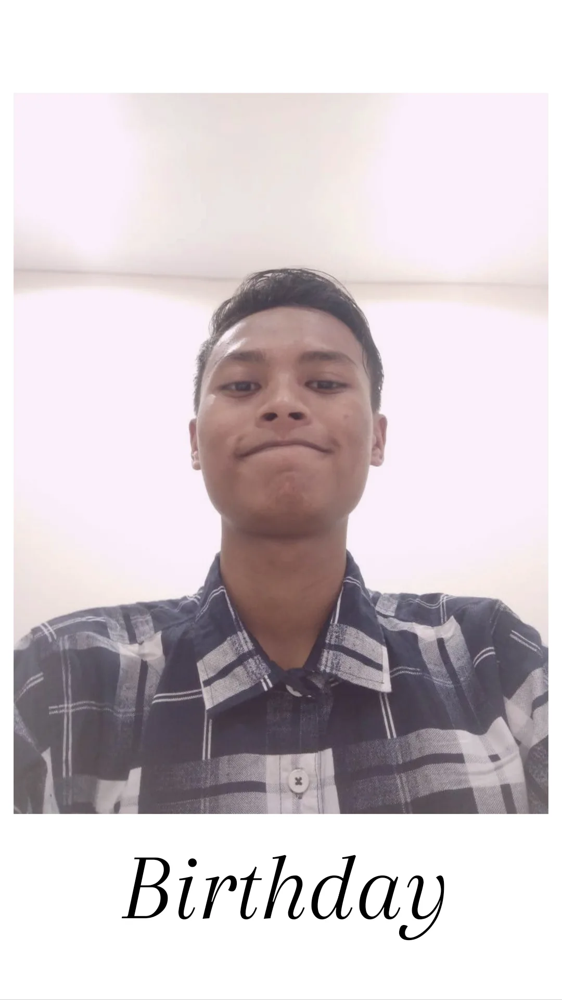

selamat bertambah usia yang ke 24 tahun ya sammy..
anak ganteng, anak baik, anak receh, anak mageran, anak nyebelin,
anak gemini hohoho :D
doa nya aku taruh di card ke-2 ya...
card ke-3 penutupnya xixixi :D
MAQRIBI
Barakallah Fii Umrik Sammy

Semoga diberikan umur yang berkah untuk kedepannya,
dilancarkan rezekinya, dipermudah segala urusannya,
diberikan jalan keluar disetiap masalahnya, dikabulkan segala hajatnya,
diberikan kebahagiaan & kesehatan selalu, apapun doa yang sampean ucapkan disetiap sujud semoga cepat
terwujud
dalam waktu yang terbaik untuk sammy..
SAPUTRA
Barakallah Fii Umrik Sammy
Tetap jadi anak yang baik, humoris, dan ceria ya sammy..
Dijaga tangannya kalo luka diobati jangan dilem yaa,
sama jangan hilang senyumnya :D nanti banyak yang kabur xixixi...